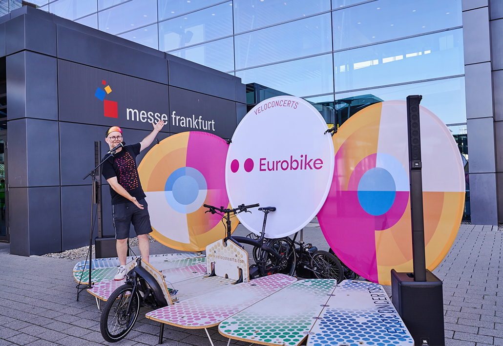

Event展会
EUROBIKE 2026 Frankfurt: Global E-bike & Mobility TrendsEUROBIKE 2026 法兰克福：全球电动自行车与出行趋势
Global e-bike, cargo bike and mobility industry trends from Europe's premier cycling exhibition.
来自欧洲顶级自行车展的全球电动自行车、货运自行车和出行行业趋势。